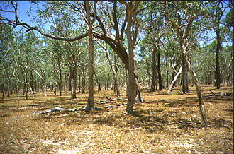

A savanna or savannah is a grassland ecosystem characterised by the trees being sufficiently widely spaced so that the canopy does not close. The open canopy allows sufficient light to reach the ground to support an unbroken herbaceous layer consisting primarily of grasses. The word originally entered English in 1555[10] as the Latin Zauana, equivalent in the orthography of the times to zavana (see history of V). Peter Martyr reported it as the local name for the plain around Comagre, the court of the cacique Carlos in present-day Panama. The accounts are inexact, but this is usually placed in present-day Madugandí or at points on the nearby Guna Yala coast opposite Ustupo or on Point Mosquitos. These areas are now either given over to modern cropland or jungle.
Savannas /maintain an open canopy despite a high tree density. It is often believed that savannas feature widely spaced, scattered trees. However, in many savannas, tree densities are higher and trees are more regularly spaced than in forest. The South American savanna types cerrado sensu stricto and cerrado dense typically have densities of trees similar to or higher than that found in South American tropical forests, with savanna ranging 800–3300 trees/ha and adjacent forests with 800–2000 trees/ha. Similarly Guinean savanna has 129 trees/ha, compared to 103 for riparian forest, while Eastern Australian sclerophyll forests have average tree densities of approximately 100 per hectare, comparable to savannas in the same region.
Savannas are also characterised by seasonal water availability, with the majority of rainfall confined to one season; they are associated with several types of biomes, and are frequently in a transitional zone between forest and desert or grassland. Savanna covers approximately 20% of the Earth's land area.
The German Park Recreation Club hosts three picnics the last Saturday in June, July, and August.
Admission gate open 4-9 pm; Park closes at 11 pm.
The Space Shuttle was a partially reusable low Earth orbital spacecraft system operated by the U.S. National Aeronautics and Space Administration (NASA). Its official program name was Space Transportation System, taken from a 1969 plan for a system of reusable spacecraft of which it was the only item funded for development. The first of four orbital test flights occurred in 1981, leading to operational flights beginning in 1982. They were used on a total of 135 missions from 1981 to 2011, launched from the Kennedy Space Center (KSC) in Florida. Operational missions launched numerous satellites, interplanetary probes, and the Hubble Space Telescope (HST); conducted science experiments in orbit; and participated in construction and servicing of the International Space Station. The Shuttle fleet's total mission time was 1322 days, 19 hours, 21 minutes and 23 seconds.
Shuttle components included the Orbiter Vehicle (OV), a pair of recoverable solid rocket boosters (SRBs), and the expendable external tank (ET) containing liquid hydrogen and liquid oxygen. The Shuttle was launched vertically, like a conventional rocket, with the two SRBs operating in parallel with the OV's three main engines, which were fueled from the ET. The SRBs were jettisoned before the vehicle reached orbit, and the ET was jettisoned just before orbit insertion, which used the orbiter's two Orbital Maneuvering System (OMS) engines. At the conclusion of the mission, the orbiter fired its OMS to de-orbit and re-enter the atmosphere. The orbiter glided to a runway landing on Rogers Dry Lake at Edwards Air Force Base in California or at the Shuttle Landing Facility at the KSC. After the landings at Edwards, the orbiter was flown back to KSC on the Shuttle Carrier Aircraft, a specially modified Boeing 747.
Immerse yourself in the world's first 360° documentary film that explores the drastically changing Arctic landscape as seen through the eyes of the Inuit.